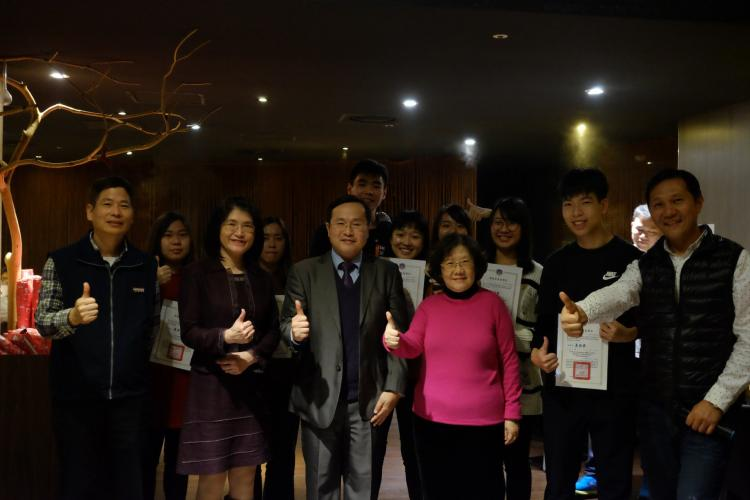
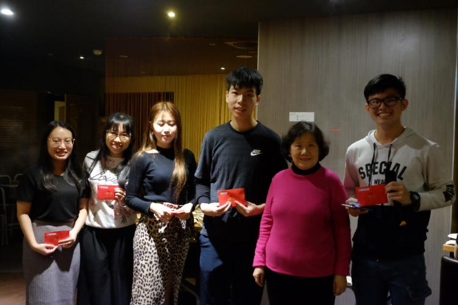
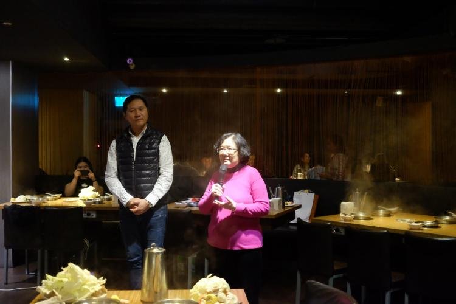
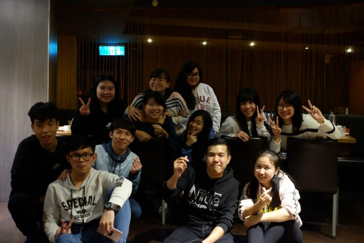

生輔組與僑生聯誼社於1月7日舉辦僑陸生春節聯歡餐會，在期末考迫近的歲末年終之際，安排熱騰騰的火鍋饗宴，讓僑陸生們和師長提早迎新春、賀新歲，本次參與師生共計87人。
這次的餐會有教育部及僑委會代表帶來新年的祝福，本校張校長、顏學務長、生輔組呂組長及輔導教官們也熱情給予僑陸生們最溫暖的關懷與問候。另外還有豐富多元的摸彩獎項，參加的同學人人有奬，讓大家都能得到一份新年的祝福。
隨著春節聯歡餐會的圓滿完成，為這一年畫下句點，也向新的一年展開嶄新的希望。